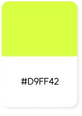
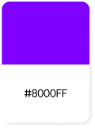
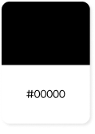

Web Publishing
LUSH
LUSH는 핸드메이드 브랜드이자, 자연과 동물을 아끼고 사랑하는 확고한 철학을 가진 핸드메이드 브랜드입니다
#HTML5 #CSS3 #JavaScript #GSAP #Lenis #SVG
Personal Projact | 2024.01.05 ~2024.01.15
Overview
기존 러쉬 사이트가 확고한 철학으로 브랜드만의 색이 짙고 개성 넘치는 브랜드 이미지에 비해 평범하고 재미가 없다는 느낌을 받았다. 그래서 브랜드의 철학과 분위기를 담아 화려하고 새롭게 리디자인부터 퍼블리싱까지 해보았습니다.
Time Line
- 레퍼런스 사이트 선정 후 페이지 구성과 컨셉 구상 후 각 페이지에 들어갈 내용 정리
- 프로토타입 디자인 작업 후 이미지 소스 제작
- html/css 마크업 작업
- 전제적인 흐름과 컨셉에 어울리지 않는 부분 디자인 수정
- js 플러그인 GSAP와 스크롤 이벤트 구현
- 이미지가 페이지에 더 어우러지도록 보정
- 마지막으로 Lenis를 활용해 스크롤에 부드러운 느낌을 더해 마무리
GSAP
Lenis Study
- 전에 익혔던 ScrollTrigger 복습
- 예제를 참고해 직접 만들어보면서 해당 플러그인 원리 이해
- Lenis 사용법을 익히고, ScrollTrigger와 함께 사용할 때 주의할 점 고려하여 적용
Style Guide
-
Concept
'핸드메이드라는 것에서 착안하여 기존 러쉬 폰트와 함께 중간중간에 이미지에 낙서를 더해 러프한 느낌을 강조하고자 했다'
- 흑백
- 아날로그
- 핸드메이드
- 낙서
- 러프함
-
Keyword
#무게감 #톡톡튀는 #개성있는
#러쉬 #빈티지 #자연 -
Color Palette
러쉬 하면 떠오르는 색인 블랙으로 러쉬 자체의 분위기를 가져가면서, 쨍한 포인트 색으로 단단함 속에 톡톡튀는 개성을 표현하고자 사용했습니다
   -
Fonts
본문 | SUIT / 수트
font-family: 'SUIT'
포인트 | Lush / 러쉬
font-family: 'Lush'
-
Fonts Style
-
'LUSH' 인트로
8rem
-
'lush' 제목
4.4rem
-
'LUSH' 제목
6rem 700
-
'LUSH' 소제목
6rem 700
-
'LUSH' 본문
1rem 400
-
Problem Solving
-
Failure :(
-
ScrollTrigger로 gif 이미지의 투명도를 조절했으나 스크롤을 한참 내리고 다시 올라가면 투명도가 조절되는 위치가 변함
-> 원인을 찾지 못하여 결국 해결하지 못함
-
브랜드 페이지에서 스크롤을 내리면 이미지가 쌓여있는 효과를 ScrollTrigger pin으로 고정하여 주고 싶었으나 실패
-> 자동으로 하나씩 나타나게 하는 것으로 대체
-
ScrollTrigger로 gif 이미지의 투명도를 조절했으나 스크롤을 한참 내리고 다시 올라가면 투명도가 조절되는 위치가 변함
-
Success :)
-
인트로에서 스크롤을 내리면 나타나는 텍스트 애니메니션이 메인이미지 배경으로 깔려야하는데 이미지 위로 올라와서 z-index 값을 지정했으나 변화가 없음-> <section class="intro"> 자식요소에 position absolute를 주고 z-index 값 지정하니까 해결!
-
푸터로 넘어갈 때, 푸터 전 페이지가 위로 올라가면 푸터가 서서히 보이게 하기 위해 position sticky와 z-index를 주었더니 배경색이 없던 페이지들과 겹쳐서 보임
-> 모든 <section>에 배경색을 흰색으로 지정-> z-index로 맨밑으로 보냈던 인트로/엔딩에 텍스트 애니메이션이 안 보이는 또 문제 발생-> 애니메이션에 직접 준 z-index를 뺀 대신 위로 올라오는 이미지에 z-index를 줌!
-
푸터에 z-index -9999를 주었더니 연결되어 있는 포트폴리오와 작업일지 링크가 눌리지 않음
-> z-index를 0으로 수정하고 각각의 <section>에 0보다 큰 z-index 값을 부여-> 그러나 일부 페이지가 보이지 않는 문제가 또 발생-> position 기본 값인 static으로 자동 부여돼서 그랬던 것. relative로 값 지정하니 해결!
-
gsap scrollSmoother을 주면 scrollTrigger에서 준 pin 고정이 되지않음
->lenis 플러그인을 사용해 lenis가 발생하면 ScrollTrigger.update 함수가 호출되도록 해서 부드러운 스크롤을 구현!
-
인트로에서 스크롤을 내리면 나타나는 텍스트 애니메니션이 메인이미지 배경으로 깔려야하는데 이미지 위로 올라와서 z-index 값을 지정했으나 변화가 없음
Review
-
Bad
- 스크롤 이벤트 중에서 이미지가 쌓이는 효과를 완벽하게 구현해내지 못한 것이 많이 아쉬움. 기회가 있다면 더 보충하고 싶음.
- 마우스 이벤트를 좀 더 다양하게 주고 싶었으나 역량 부족으로 단순하게 준 것
- 마우스 커서를 커스텀하여 특정 구간에 가면 변하는 이벤트를 주고 싶었으나 시간이 부족해 구현완성을 하지 못한 점
- 코드를 좀 더 깔끔하고 통일감있게 작성하고 싶었으나 생각보다 쉽지 않았음
-
Good
- 처음 디자인을 했을 때는 무채색으로만 작업을 했는데 전제적으로 심심하고 텍스트가 눈에 잘 들어오지 않았음 그래서 포인트 색을 주었더니 무게감이 있으면서도 눈에 확들어오는 주목성이 생김
- 러쉬 하면 떠오르는 이미지와 분위기에 잘 어우러지는 디자인으로 잘 구현된 것 같음
- 처음에 구상할 때 구현하고자 했던 스크롤 이벤트를 거의 다 구현한 것
-
Takeaway
- 웹사이트를 혼자서 리디자인부터 퍼블리싱까지 진행하려다보니 시간이 되게 오래걸릴 것으로 예상했지만 생각보다 금방 해내면서 자신감을 얻음
- 이제는 html5이나 css3로 구조를 짜는 것에는 큰 어려움이 없지만 스크립트로 이벤트를 적용하는 것은 꾸준하게 공부할 필요가 있을 것 같음